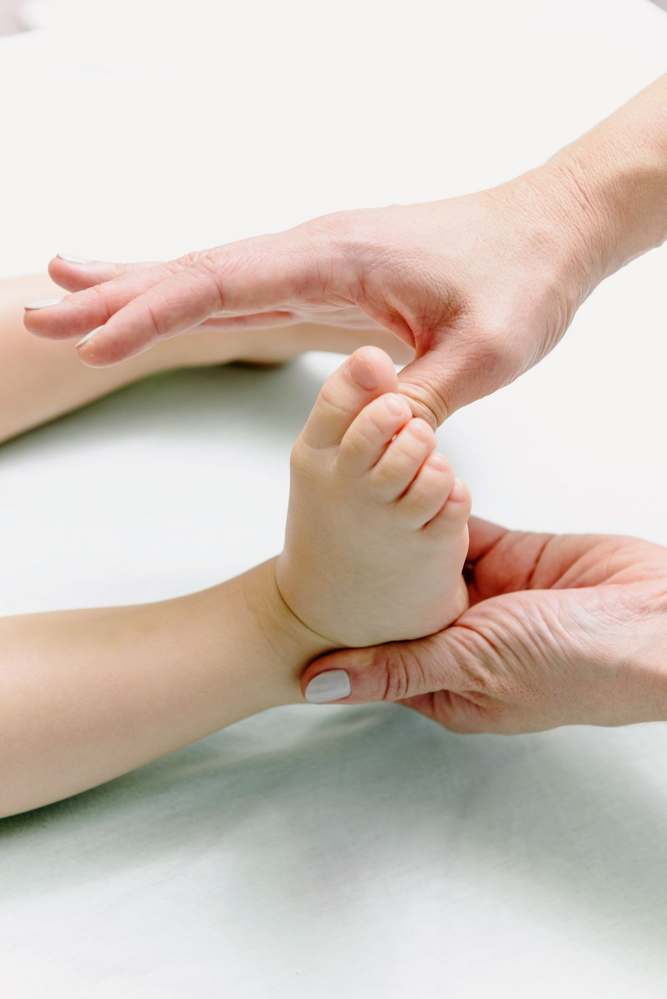
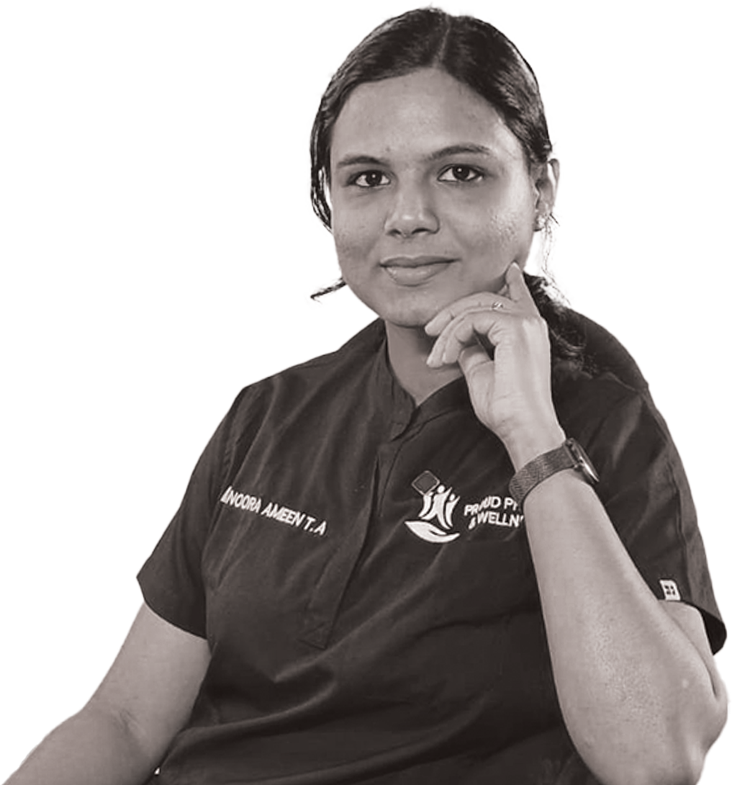

The Best Physiotherapist in Kakkanad & Kochi
Move Better, Live Stronger, Feel the Difference
Proud Physio & Wellness is a trusted physiotherapy clinic in Kakkanad, Kochi offering expert home care physiotherapy, sports & musculoskeletal therapy, neurological rehabilitation, paediatric, geriatric, women's health and post-surgical rehab. Whether it's pain relief, post-injury recovery, or improving performance, our personalised, evidence-based programmes are designed to get you back to your best.
Book An Appointment
Care
Available


Home Care Physiotherapy
Specialised physiotherapy at home for those who are unable to travel, ensuring effective recovery.
Personalized Therapy
Each treatment is designed specifically for you, based on your unique needs, goals and recovery.
Comfortable Healing
Our clinic is supportive and comfortable, designed to make you feel at ease during treatment.
Certified Physiotherapists
Our team holds advanced qualifications and certifications, delivering safe and trusted results.
Trusted Physiotherapy in Kakkanad & Kochi, Supporting Your Recovery Every Step of the Way
Welcome to Proud Physio & Wellness
At Proud Physio, we are dedicated to helping you recover faster, move with greater confidence, and live your life with less pain. Our team of expert physiotherapists are committed to providing personalised care for each and every patient.
Whether you're recovering from an injury, managing a chronic condition, or simply wanting to improve your physical performance, we're here to guide you through every step of your recovery journey.

Mission Statement
Our mission is to empower individuals to take control of their physical health through expert physiotherapy, education, and continuous support.
The Healing Process


- From sports injuries to chronic pain, we treat a full range of conditions.
- At Proud Physio, we're committed to delivering evidence-based treatments.
- Trusted rehabilitation for complete recovery and long-term wellbeing.
Our Physiotherapy Services in Kakkanad & Kochi

Geriatric Physiotherapy
Our geriatric physiotherapy focuses on improving mobility, balance and independence for older adults, helping restore function and reduce discomfort in daily activities.

Neurological Rehabilitation
We support people with neurological conditions such as stroke, multiple sclerosis, and Parkinson's disease through targeted movement therapy and rehabilitation.

Pediatric Physiotherapy
We treat children across a wide range of conditions with a focus on friendly, compassionate care designed for a child's unique stage of physical development.
Musculoskeletal & Sports Physiotherapy
Our musculoskeletal physiotherapy addresses issues stemming from joint, muscle and ligament problems. We restore function and relieve pain through targeted exercise, manual therapy and education.

Ergonomic, Nutrition & Lifestyle Guidance
We provide ergonomic advice, nutritional methods and lifestyle strategies to support your overall health and wellbeing, and improve your physical and mental performance.

Women's Health Physiotherapy
We offer expert care with a specialist physiotherapy service designed to address a range of women's health conditions, from pelvic floor dysfunction to prenatal and postnatal support.

Recurrence Management
We help identify the root cause of recurring injury or pain, and work to reduce future injury risk through injury prevention programmes, education, movement analysis and rehabilitation.
Where Does It Hurt? Tap a Body Area to Learn More
Common Issues We Treat
How We Help
This tool is for general guidance only and is not a medical diagnosis. For persistent or severe symptoms, book an assessment with our physiotherapist.
You're not just a patient, you're someone we care about deeply.
At Proud Physio, we're committed to supporting and empowering our patients through their recovery journey. Our physiotherapists provide expert and personalised care for each patient, ensuring every patient gets the best possible treatment outcome.
See More →Personalised care for you
Our treatment plans are designed around each patient individually, ensuring you receive the right treatment for your body and your goals, delivered with care and expertise.
Home Care Physiotherapy
We bring quality physiotherapy directly to your home, giving you the convenience and support you need to recover comfortably from wherever you are.
Recovery and prevention
We help you not only recover from injury but also prevent future problems by teaching you strategies that keep your body strong, mobile, and pain-free for the long term.
Friendly and Supportive
Our team creates a warm and welcoming environment for every patient who visits us, making sure you always feel heard, respected, and fully supported through every visit.
Expert Care, Led by Dr. Noora
Dr. Noora Ameen TA (PT)
Dr. Noora is the heart of Proud Physio and Wellness. With years of clinical experience across Kakkanad and Kochi, she has helped hundreds of patients move better, recover faster, and live with less pain. Her approach is simple and personal. She listens first, assesses thoroughly, and builds a treatment plan around each patient's body, goals, and daily life.
From sports injuries and post surgical recovery to neurological rehabilitation, women's health, and home care physiotherapy, Dr. Noora brings warmth, patience, and evidence based expertise to every session. She believes recovery is a partnership, and she stays by your side at every step.
- Certified, experienced physiotherapist trusted across Kakkanad and Kochi
- Personalised, evidence based treatment for every patient
- Home care visits for those who cannot travel to the clinic

Real Recovery Journeys: What Physiotherapy Can Achieve
Frozen Shoulder
"I could not comb my hair or reach the top shelf. Now I have my arm back."
After Knee Replacement
"From a walker at home to my morning walk around the park, step by step."
Chronic Low Back Pain
"The ergonomic changes plus the exercise plan fixed what years of painkillers could not."
Illustrative journeys based on typical treatment outcomes at Proud Physio & Wellness. Individual results vary with condition and consistency.
Come Visit Us. A Safe, Peaceful Place for Your Healing
Our friendly team is always happy to welcome you to our clinic. Whether it is for a consultation, treatment or follow-up, you will find a calm, professional environment designed to support your healing journey. We look forward to seeing you.
See More →Stories of Healing and Hope from Our Patients
"The team at Proud Physio was absolutely incredible. The care and attention I received was outstanding, and I felt supported through every step of my recovery."

"After my injury, I was worried about getting back to my active lifestyle. The team designed a personalised recovery plan and I'm now back to my best. Couldn't be happier!"

"Wonderful physiotherapy clinic. The team genuinely care about your progress and make every session count. The home care service was a lifesaver. Highly recommended."

Physiotherapy in Kakkanad & Kochi: Frequently Asked Questions
Everything you need to know about our physiotherapy and home care services. Can't find your answer? Reach out and our team in Kakkanad will be happy to help.
We're Here to Guide You Toward Healing
Please feel free to reach out any time you have a question, or would like to take the first step toward improving your health and wellbeing. Our dedicated team in Kakkanad and Kochi are ready and waiting to help.
Book Us Now →Understand Your Condition, Explore Our Knowledge Base
Back & Neck Pain
Desk-related pain, sciatica, disc problems and chronic stiffness, and how targeted therapy resolves them.
Knee & Joint Pain
Arthritis, sports injuries and post-surgery stiffness, and why exercise therapy often beats waiting it out.
Stroke & Neurological
Stroke, Parkinson's and MS recovery: how structured rehabilitation rebuilds movement and independence.
Pregnancy & Women's Health
Pelvic floor care, safe exercise in pregnancy and postnatal recovery, delivered with privacy and sensitivity.
Children's Development
Developmental delay, gait concerns and childhood conditions treated through friendly, play-based therapy.
Healthy Ageing & Falls
Balance training, arthritis care and fall prevention that keep seniors independent, at the clinic or at home.
Helpful Tips and Insights for Your
Journey to Better Health
View All Articles →

Back Pain from Desk Work: A Physiotherapist's Guide for Kochi's IT Professionals
Long hours at Infopark and Kakkanad desks are driving an epidemic of back and neck pain. Learn the warning signs, ergonomic fixes and how physiotherapy treats it for good.
Read More →Knee Pain: Causes, Treatment and How Physiotherapy Helps You Avoid Surgery
From osteoarthritis to runner's knee, most knee pain responds brilliantly to exercise therapy. See why movement beats rest and how the right programme can keep surgery off the table.
Read More →Stroke Rehabilitation at Home: How Physiotherapy Rebuilds Movement and Independence
The golden window, neuroplasticity and the caregiver's role explained. A practical guide for Kochi families supporting a loved one's recovery after stroke.
Read More →